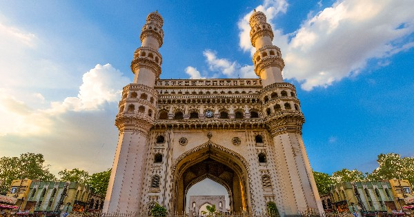

Function and Significance of the Charminar

The construction of the Charminar occured in 1591 CE under Sultan Muhammed Quli Qutb Shah when Hyderabad when Hyderabad became the capital of the Qutb Shahi Kingdom. This is the year when the city was founded and the monument was built as a symbol of thanks since the deadly plague that affeted the area finally passed away. Therefore, the structure can be seen in two ways - as a monument signifying the start the start of a new capital as well as relief from a difficult period.
Its location at the crossing point of four major roads gave it a key position in the layout and activities taking place in the city. Also, the mosque that stands on the second floor of the Charminar is functional nowadays and used especially on holidays such as Eid. Thus, the building is not only a monument but also represents an intersection of religion and regular life in the city. People go there every day for various religious ceremonies, communication, and other activites, which connects it directly with city life.